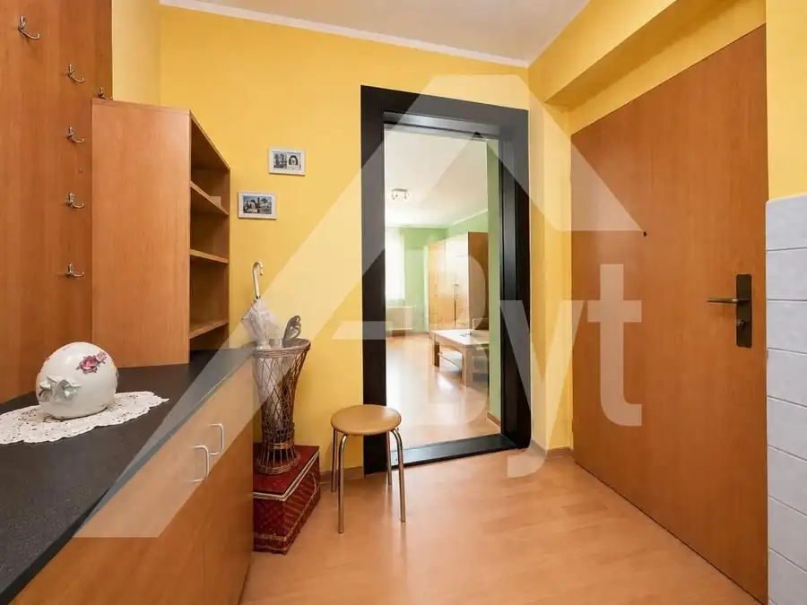
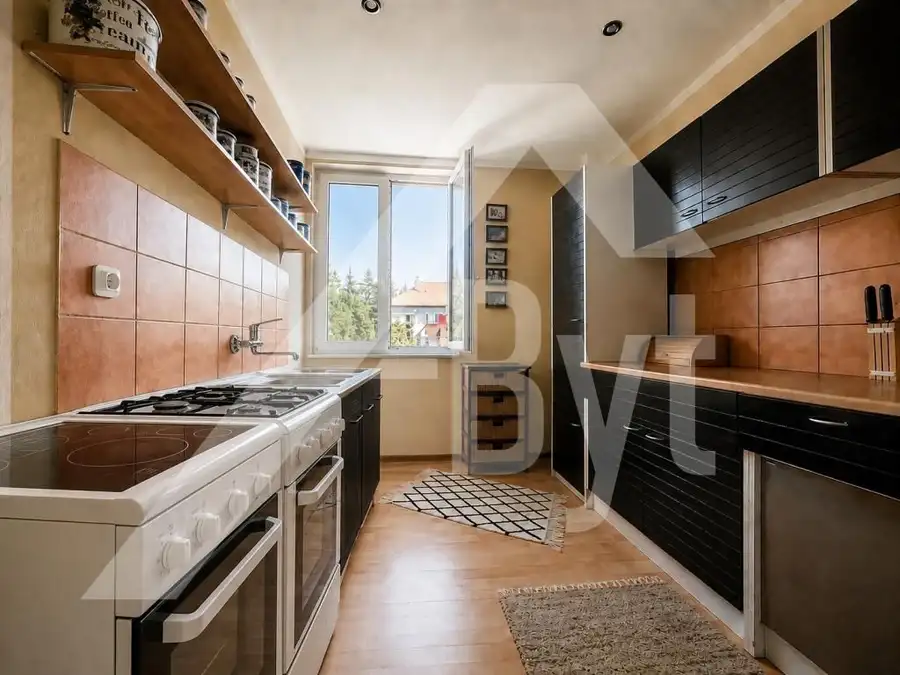
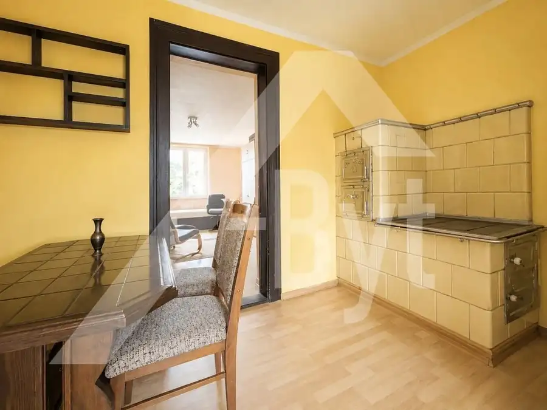
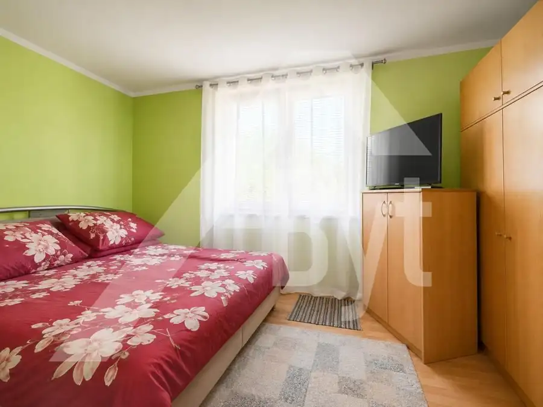
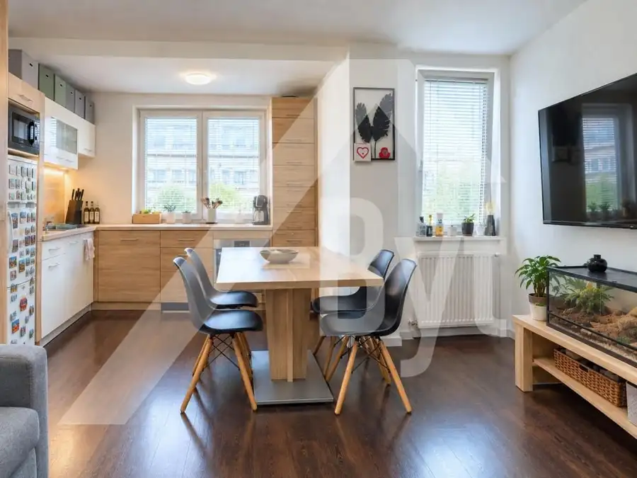
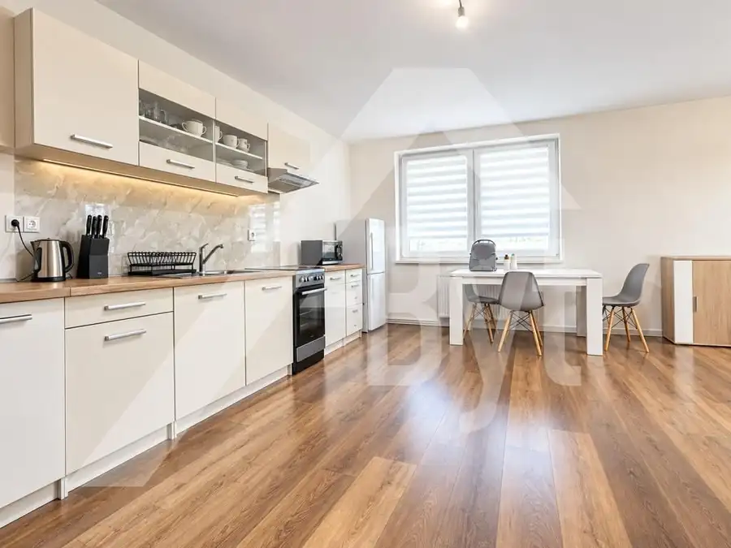
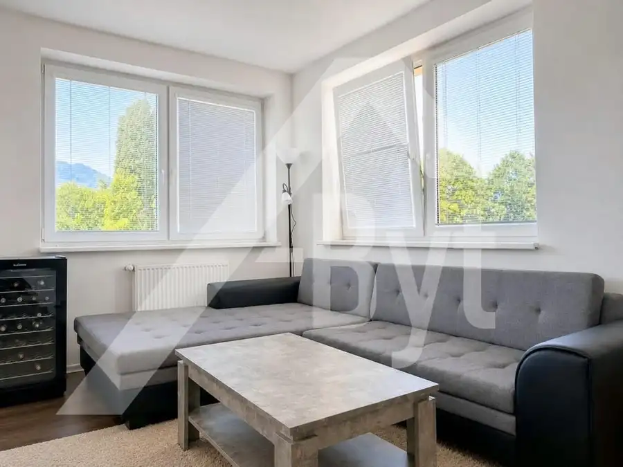

Veľký tehlový 2-izbový za dobrú cenu
Ružomberok




- Dispozícia2-izbový
- Plocha82 m²
- Poschodie3. z 3
- StavPôvodný stav
O nehnuteľnosti
Ponúkame na predaj tehlovú mestskú klasiku veľkej výmery, 5 min od pešej zóny Mostová.Byt je v pôvodnom stave s nadštandardnou úžitkovou plochou 82m² (z toho obytná ca 72m²), veľkou murovanou pivnicou a bezpečným, ohradeným parkovaním vo dvore.Priestor má v súčasnosti rozloženie na 2 izby a veľkú kuchyňu s jedálenským kútom + kúpeľňa a špajza. Jadro je murované a kúpeľňa so špajzou majú okná. Byt je teraz prenajatý a teda je obývateľný aj pri menšej investícii. Ponúka však možnosť aj radikálnych dispozičných zmien (vrchné poschodie, tehlové priečky) V dnešnej dobe zásadný parameter - náklady na kúrenie a ohrev vody - sa dá výrazne ovplyvniť zriadením vlastného kotla - elektrického s vykurovacou tarifou alebo plynového. Navyše je tu zriedkavá možnosť mať v obývačke riadny krb, nakoľko doterajšoe vykurovanie je riešené kachľovou pecou a teda je dostupný funkčný komín.Pri rekonštrukcii je možnosť meniť dispozíciu izieb a zriadiť si vlastné nezávislé vykurovanie, prípadne za príplatok zhotoví ústredné kúrenie sám predávajúci (viď VÝHODNÁ PONUKA nižšie).Náklady na doterajšie bývanie boli extrémne nízke a po modernizácii je tento trend udržateľný. Okná bytu sú plastové, orientácia J-S a obe izby majú výhľad do centra mesta na juh (kuchyňa a špajza sú na sever).Bytový dom prešiel rozsiahlou rekonštrukciou:- zateplená fasády, nové vstupné dvere- nová strecha a odkvapy- plastové okná v byte aj v spoločných priestoroch- diaľkovo ovládaná elektrická brána na uzavreté parkovisko vo dvore************************************************************************************************ VÝHODNÁ PONUKA: na želanie kupujúceho zhotoví majiteľ kompletné ústredné kúrenie podľa výberu :plynové (kotol + radiátory) alebo systémom klíma/kúrenie v celom byte. V takom prípade je cena bytu 97.000€************************************************************************************************NÁZOR MAKLÉRA: Byt je vhodný pre ľudí, ktorí chcú získať mestské bývanie a mať v blízkom okolí všetku občiansku vybavenosť, ale hľadajú niečo iné ako panelákové sídliská. Nehnuteľnosť je vhodná aj na následný prenájom.************************************************************************************************Nehnuteľnosť je možné kúpiť a financovať aj formou hypoúveru, s ktorého vybavením Vám radi a bezplatne pomôžeme.************************************************************************************************Kontakt: 0905-11 55 00 alebo henoch@nehnutelnosti-predaj.sk************************************************************************************************Energetický certifikát nebol predložený.
Parametre
- Cena vrátane energií
- Nie
- Doprava
- Diaľkový autobus, Vlak, Cesta, MHD, Cyklistická infraštruktúra, Diaľnica
- Druh
- 2 izbový byt
- Dátum zverejnenia
- 12. 08. 2026
- Energetický certifikát budovy
- nie je
- Orientácia
- Južná, Severná
- Podlažie
- 3
- Počet izieb / miestností
- 2
- Počet nadzemných podlaží
- 3
- Počet pivníc
- 1
- Počet spální
- 2
- Počet vonkajších parkovacích miest
- 1
- Prechodová izba
- Áno
- Rok poslednej rekonštrukcie
- 2010
- Stav nehnuteľnosti
- Pôvodný stav
- Typ
- Predaj
- Typ konštrukcie
- Tehlová
- Umiestnenie
- Posledné podlažie
- Vybavenie
- Pivnica, Predzáhradka, Vonkajšie parkovacie miesto
- Vykurovanie
- Lokálne
- Úžitková plocha
- 82 m²
Kde to je


Mohlo by Vás zaujímať

BytNové 136 000 €3-izbový moderný nový byt pri Martine, 59m² Martin 3-izbový59 m²1. podlažie
BytNové 143 000 €3-izbový moderný nový tehlový byt v Turanoch Martin 3-izbový62 m²1. podlažie
BytRezervované 106 000 €Nový 2-izbový byt s terasovým oknom * Turany pri Martine Martin 2-izbový45.48 m²1. podlažie